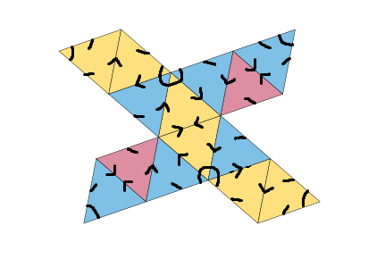

There is a unique path from any corner to another by following the arrows. You can go in the direction of the arrows or if there is a circle on a corner you can stay still
If this upsets you there is a fairly simple proof that any graph with n vertices and with a unique distance 2 path between any 2 points must have at exactly sqrt(n) loops so this is unavoidable
